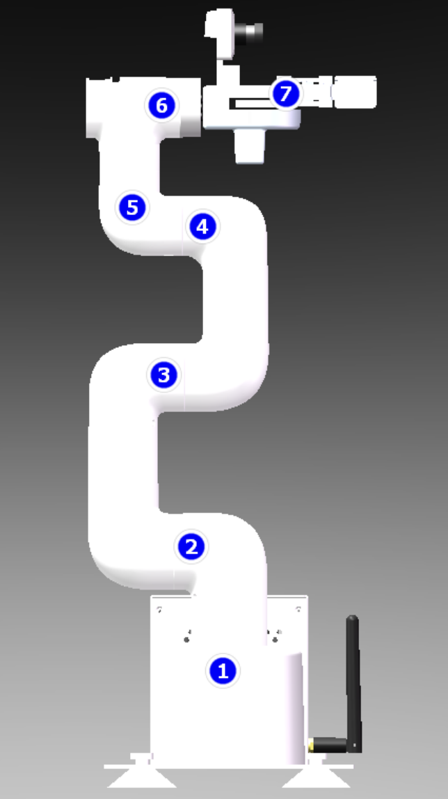

5.4. 로봇팔과 그리퍼 제어#
위의 세팅을 해서 연결한 후 로봇팔의 기본 움직임을 사용해본다.
5.4.1. pymycobot Git#
깃링크를 통해서 더 많은 함수와 파라미터를 구경할 수 있다.
5.4.2. Jupyter notebook 켜기#
# [Robot 터미널]에서 진행
# JetCobot 전용 가상환경 구축
python3 -m venv ~/venv/mycobot
source ~/venv/mycobot/bin/activate # 가상환경 실행
# SDK와 기타 패키지 설치
pip install pymycobot --upgrade
pip install opencv-python
pip install jupyter
가상환경안에서 jupyter notebook을 켜고 실행한다.
jupyter notebook # [Robot]
뜨는 링크를 통해 PC에서 jupyterbook에 접속한다.
5.4.3. 로봇 연결 코드#
필요한 라이브러리 불러오기
import os
import time
import threading
from pymycobot.mycobot280 import MyCobot280
from pymycobot.genre import Angle, Coord
로봇 연결. JetCobot의 이미지에는 로봇의 Udev 설정이 돼있다.
mc = MyCobot280('/dev/ttyJETCOBOT', 1000000) # 라즈베리랑 로봇 컨트롤보드 통신하기 위한 시리얼 포트 경로, 로봇 컨트롤 보드와 통신하기 위한 시리얼 포트 경로, 즉, 이 경로에 연결된 로봇과 통신할게라는 의미
mc.thread_lock = True
print("로봇이 연결되었습니다.")
5.4.4. 로봇팔#
5.4.4.1. 로봇의 현재 데이터 읽기#
# 현재 각도 읽기
angles = mc.get_angles() # Pose1: 기준축에 대한 각도로 정의
print("현재 각도:", angles)
# 현재 좌표 읽기
coords = mc.get_coords() # Pose2: 로봇팔 gripper 의 좌표로 정의
print("현재 좌표:", coords)
# 인코더 값 읽기
encoders = mc.get_encoders()
print("인코더:", encoders)
# 라디안 값 읽기
radians = mc.get_radians()
print("라디안:", radians)
get_angles()
The get_angles() function in the pymycobot library returns a list of six floating-point values (in degrees) representing the current rotational angle of each joint (J1 through J6).
These angles are calculated with respect to the physical zero-position of the previous joint (relative joint angles), rather than a fixed global Cartesian axis, though they are usually visualized with the arm in a straight, vertical upright posture.
Return value: A list: [j1, j2, j3, j4, j5, j6]
Units: Degrees (usually in a range between -170° to +170°, depending on the specific model).
Joint Definitions (Axis of Rotation): J1 (Base): Rotates around the vertical-axis of the base. J2 (Big Arm): Rotates around a horizontal axis (pitch). J3 (Forearm): Rotates around a horizontal axis (pitch). J4 (Forearm Roll): Rotates around the longitudinal axis of the forearm. J5 (Wrist Pitch): Rotates around a horizontal axis. J6 (Wrist Roll): Rotates around the longitudinal axis of the end-effector.
end effector는 myCobot에서 기본 설정으로 gripper가 아니라, 회색쪽 좌표 (플렌지?) 임 물체의 좌표를 알아냈을 때, 그리퍼가 오므렸을 때의 점 (tcp)이길 알아야함. 따라서, offset을 계산해서
TCP (tool center point): 작업 도구의 가운데 점
get_coords()
바닥어딘가의 기준점
5.4.4.2. 로봇팔을 초기 위치로 리셋 (Home Pose)#
initial_angles = [0, 0, 0, 0, 0, 0]
speed = 50 # 퍼센트 0~100
print("로봇을 초기 위치로 리셋합니다.")
mc.send_angles(initial_angles, speed) # 6개의 조인트는 로봇팔에 있는 것이고
mc.set_gripper_value(100, speed) # 그리퍼 열기, 0을 넣으면 그리퍼가 닫힘.
time.sleep(3) # 움직임이 완료될 때까지 대기, 제어 시간을 줌
print("리셋 완료")

5.4.4.3. 로봇팔 관절 움직이기#
JetCobot은 왼손좌표계를 사용한다. 로봇의 정면이 x, 로봇의 왼쪽이 y축, 로봇의 오른쪽이 z축
angle: 연결 joint와의 각도
coord: pose (x, y, z, rx, ry, rz)
5.4.4.3.1. 목표 angle 로 움직이기 send_angle()#
목표 속도 및 좌표로 움직이는 것이다.
단일 관절 각도 움직이기: sent_angle(), 단수
여러 관절 각도 움직이기: sent_angles(), 복수
5.4.4.3.2. 목표 좌표로 움직이기 send_coord()#
Inverse Kinematics (IK) 로 풀 수 있는 경우에만 이동한다. (IK로 풀지못하면 안 움직임)
FK: 각도 -> 좌표
IK: 좌표 -> 각도, 풀리지 않을 수 있다. (뭔가를 잡아야한다 -> 주어진 좌표로 이동하기 위해 각도를 계산해야한다)
해가 여러개일 수 있다 = 같은 자세를 구성하는 자세도 다양함.
해당 JetCobot에서는 특정 포즈로 이동하는 방법을 어떤 것을 쓰는지 알 순 없음.
동영상
예를 들어서,
5.4.5. 그리퍼 제어 set_gripper_value()#
동영상 o, 0으로 완전히 닫아도
5.4.6. 수동 조작 모드#
많이하게 될 것임. 실행전에 손으로 로봇팔을 잡고 시작. 공장에서 반복작업을 하는 경우 자세가 정해져있다. 수동조작 모드로 그 자세를 만들어주고
# 모터 비활성화, 손으로 잡고 있어야 함.
print("전체 모터를 비활성화합니다.")
mc.release_all_servos()
time.sleep(1)
# 모터 활성화
print("전체 모터를 활성화합니다.")
mc.focus_all_servos()
time.sleep(1)
수동 조작 - 현재 좌표 확인 - 수동 조작 - 현재 좌표 확인 - 수동 조작 - …
플렌지: 그리퍼와 연결된 부분
5.4.7. Mode#
MoveL은 constraints가 높아서, 풀기 더 어려운 문제이다. MoveJ가 예상과 다르게 움직일 수 있는 것은 degree of freedom이 높아서 그런가? 찾아야하는 variable의 개수가 많아서?
mode 0: angular (movej) mode 1: linear (movel)